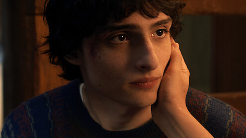
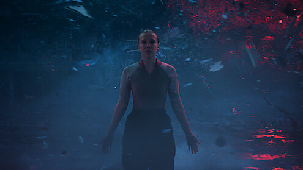
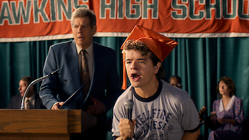
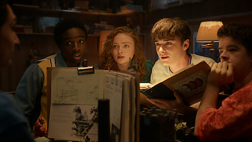
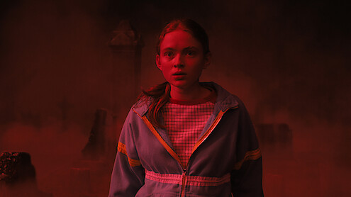
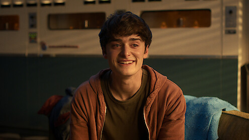
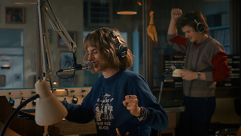
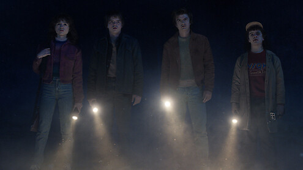
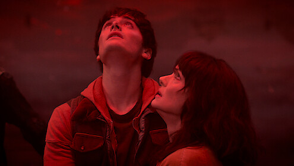
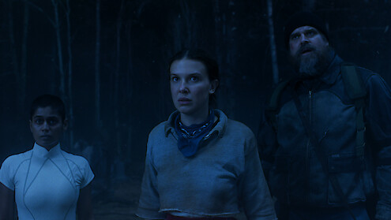

失踪与相遇
霍金斯的异常从 Will 的失踪开始，朋友们遇见 Eleven，也第一次接近颠倒世界。
Overview
《怪奇物语》由 Duffer Brothers 创作，故事从印第安纳州霍金斯小镇的一名男孩失踪开始。 随着朋友、家人和警长一起追查，秘密实验、超自然力量、另一个阴暗世界，以及一位拥有特殊能力的女孩逐渐浮出水面。
后续几季把故事从一场失踪案扩展成霍金斯与颠倒世界之间的长期对抗：孩子们从地下室的桌游伙伴长成真正要承担选择的人， 家长和成年人也不再只是旁观者，而是在危机里补上保护、牺牲和告别的位置。
它好看的地方不只是怪物和悬疑，也在于角色关系一直有温度。影评和观众讨论里经常提到的怀旧感、群像友情、音乐记忆和人物成长， 让这部剧的“恐怖”不是单纯惊吓，而更像青春故事被撕开后露出的阴影。
Five Seasons
霍金斯的异常从 Will 的失踪开始，朋友们遇见 Eleven，也第一次接近颠倒世界。
创伤没有结束，来自另一个世界的威胁继续蔓延，群像关系也变得更紧密。
霓虹、商场和暑假把故事推向更热闹的表层，暗处的危机却再次靠近。
故事规模扩大，Vecna 的出现把角色的过去、创伤和颠倒世界的来源连在一起。
最终季回到霍金斯，把前几季的问题收束到一次关于家园、选择和告别的终局。
Cast

迈克 Mike Wheeler
十一 Eleven / 11
达斯汀 Dustin Henderson
卢卡斯 Lucas Sinclair
麦克斯 Max Mayfield
威尔 Will Byers 史蒂夫 Steve Harrington
史蒂夫 Steve Harrington

罗宾 Robin Buckley 南希 Nancy Wheeler
南希 Nancy Wheeler

乔纳森 Jonathan Byers
乔伊 Joyce Byers
霍珀 Jim HopperWhy I Like It
它不是单纯靠惊吓推进，而是把未知、实验、记忆和怪物放进一个有情感重量的小镇里。每一次超自然事件都能落回人的恐惧与牵挂。
角色会害怕、会犯错，也会在关键时刻站出来。Mike、Eleven、Will、Dustin、Lucas 和 Max 的成长线让危机不只是灾难，也变成一次次选择。
音乐、街机、单车、商场、D&D 和老式科幻片气质，让它有鲜明的怀旧辨识度，也让“霍金斯”像一个可以被记住的青春地标。
资料参考： Netflix 官方页面 、 Netflix Tudum 最终季访谈 、 Rotten Tomatoes 评论综述 与 观众怀旧讨论文章